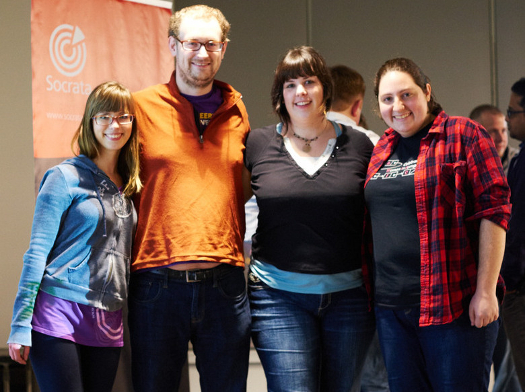

ABOUT ME
ABOUT ME
ABOUT ME
I graduated in March 2016 with a Bachelor of Science in Computer Science and Systems from University of Washington Tacoma. I've accepted a position with Google beginning September 2016, but am seeking short-term/contract work from April through August.
I discovered computer science late but fell in love and have been making up for lost time, coding and reading as much as possible. There is so much to learn and while I hate the impossibility of learning it all, I also enjoy a challenge.

SOFTWARE ENGINEER
Some of the amazing things I've already done include:
- 1st place at 2015 Hack the Commute Seattle with a web app that helps mobility impaired users avoid obstacles in our steeply hilled city
- MIT Lincoln Laboratory summer internship, where I learned a ton of new tools and skills building a web services registry for a government project and attended presentations about other ground-breaking technology being developed at the lab
- Elected President of UW Tacoma's Women in Computing Science club on a platform to introduce skills workshops, guest speakers, group projects, and a mentorship program
- Won a Grace Hopper Scholars grant from the Anita Borg Institute to attend the Grace Hopper Celebration of Women in Computing in October 2015
- 2nd place in my category at the first hackathon I attended, writing an Android app by myself when I had no previous experience with the platform
